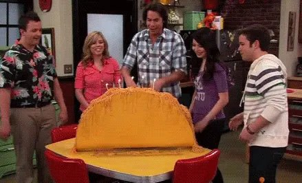

Spaghetti Tacos
"

The pinnacle of televion show foods
The spaghetti taco was created by the very talnted artist Spencer Shay
the brother of Carly Shay from hit show Icarly
Ingredients
- 1 lb ground beef
- 1 1/4 ounce packet taco seasonning
- 1 cup water
- 1 (26 ounces) jar spaghetti sauce
- 1 (8 ounce) box spaghetti noodles
- 12 hard taco shells
- salsa
- cheddar cheese
- lettuce
Recipe Steps
- Prepare noodles according to package directions.
- Brown meat in pan until no longer pink.
- Add taco seasoning and water. Bring to a boil.
- Reduce heat and simmer for 5-6 minutes, until sauce thickens.
- Add spaghetti sauce and cook until warmed.
- Add to noodles and mix thoroughly.
- place a spoonful of salsa in the shell.
- Sprinkle with a small amount of cheese.
- Finally, finish filling the shell with spaghetti.